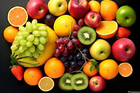

Fruit

-
Carbohydrate Content: Fruit is generally higher in carbs, ranging
from 10-30 grams per serving (typically 1 medium piece or 1 cup).
-
Low-Carb Fruits: Berries, melons, and citrus fruits are generally
lower in carbs than bananas, apples, and grapes.
-
Considerations: Dried fruits are more concentrated in carbs and
sugar due to dehydration, often containing 40-60 grams of carbs per
serving.